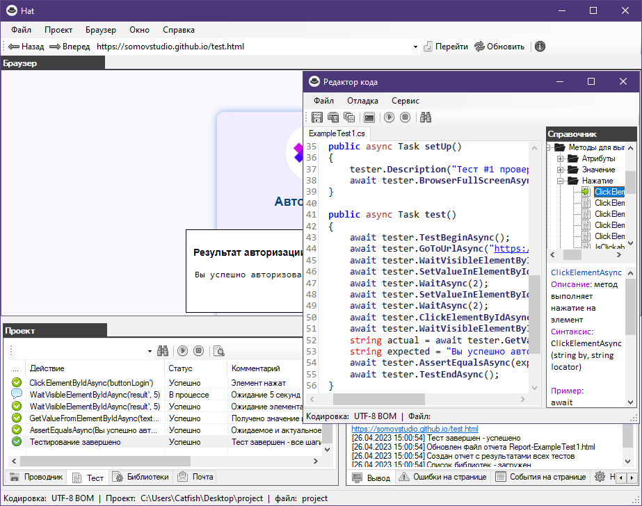

Автор данного проекта Сомов Евгений Павлович специалист в области контроля качества, ручного и автоматизированного тестирования.
Браузер со встроенной технологией автоматизированного тестирования Web приложений.
Особенность браузера Hat в том что автотесты напрямую выполняются в браузере без Selenium и WebDriver.
Встроенный фреймворк HatFramework содержит достаточное количество методов необходимых для выполнения основных задач автоматизации тестирования. Для описания скриптов автотестов используется язык программирования C# и встроенный редактор кода. Так же в качестве редактора можно воспользоваться Visual Studio. Удобный интерфейс браузера отображает все шаги выполнения теста с подробным описанием событий. Результат проверки формируется в отчет и отправляются на указаную почту.
Запуск автотестов возможен из командной строки операционной системы Windows это пригодится при использовании автотестов в популярных средствах непрерывной интеграции таких как: Jenkins, TeamCity, GitLab CI/CD.
Автор данного проекта Сомов Евгений Павлович специалист в области контроля качества, ручного и автоматизированного тестирования.
Браузер со встроенной технологией автоматизированного тестирования Web приложений.

Операционная система Windows 8, 8.1, 10, 11
Пакет Microsoft .NET Framework 4.8 (cкачать установщик .NET Framework Runtime)
Пакет Microsoft Edge WebView2 (cкачать установщик WebView2 Runtime)

Все действия над автотестами выполняются непосредственно в браузере.
Окно "Проект" предназначено для работы над проектом автотестов.
Все необходимые действия над файлами и папками проекта осуществляются на вкладке "Проводник".
Весь процесс выполнения автотеста с наглядным и подробным описаниям происходит на вкладке "Тест".
Список подключаемых библиотек во время выполнения теста редактируется на вкладка "Библиотеки".
Процесс работы автотеста на вкладке "Тест" очень подробно показывает все шаги и стадии выполнения проверки. При падении любого из шагов вы получите понятное объяснение того что произошло в ходе проверки.
В данном видео рассказывается об основных принцыпах работы с браузером, о создании проекта автотестов и выполнение демонстрационного теста, а так же общие принцыпи работы со встроенным редактором и структуре автотестов описываемых на языке программирования C#. Так же показывается запуск автотестов через командную строку что является необходимым при использовании автотестов средствами непрерывной интеграции.
Видеоуроки
| Урок №1 | Проект под Visual Studio и пример описания демонстрационного автотеста |
| Урок №2 | Выполнение JavaScript кода в теле автотеста |
| Урок №3 | Автотест для проверки API и обработки полученного результата в JSON формате |
| Урок №4 | Автотест для проверки карты сайта (sitemap.xml) |
| Урок №5 | Плагин HatPluginMySql - автоматизированное тестирование базы данных MySql |
В документации описана теория и практика по работе с автотестами и браузером в целом.
Раздел "Быстрый старт" поможет вам познакомиться с автоматизацией сразу приступить к работе над ними.
Подробно рассказывается о структуре автотестов, о паттернах PageObjects и StepObjects, а так же о редакторе кода.
Справочная информация о встроенном фреймворке поможет вам в разработке автотестов.
| Online | справочная документация online |
| Download | документация в формате chm |
Плагин HatPluginMySql для браузера Hat который позволяет выполнять автоматизированное тестирование данных в базе данных MySql.
| Download | Данный плагин можно скачать со страницы GitFlic |
Плагин HatPluginMySql для браузера Hat который позволяет выполнять автоматизированное тестирование данных в базе данных MySql.
- GitFlic: download
В документации описана теория и практика по работе с автотестами и браузером в целом.
Раздел "Быстрый старт" поможет вам познакомиться с автоматизацией сразу приступить к работе над ними.
Подробно рассказывается о структуре автотестов, о паттернах PageObjects и StepObjects, а так же о редакторе кода.
Справочная информация о встроенном фреймворке поможет вам в разработке автотестов.